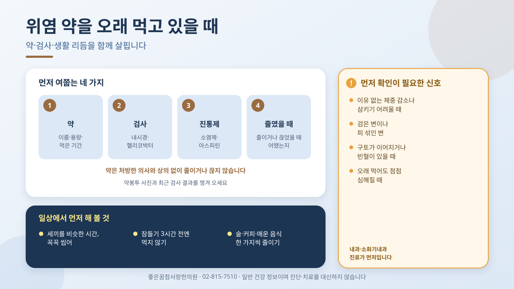

이종호 한의사 감수좋은꿈참사랑한의원 대표원장 (한의사 면허번호 19769)발행 2026-11-23 · 수정 2026-11-26
이 글의 차례
위장약을 오래 먹다 보면 "언제까지 먹어야 하나" 하는 걱정이 생깁니다. 위산을 줄이는 약은 갑자기 끊으면 증상이 다시 심해질 수 있어, 줄이거나 끊고 싶다면 먼저 처방한 의사와 상의해야 합니다. 한의원에서는 먹는 약을 모두 확인한 뒤, 속을 불편하게 하는 식사 습관과 음주, 진통소염제, 스트레스와 잠을 함께 점검합니다.
왜 이런 불편이 생길 수 있나요
- 식사 시간이 불규칙하고 빨리, 많이 먹는 습관은 속쓰림과 더부룩함을 키울 수 있습니다.
- 술과 담배, 커피, 맵고 기름진 음식이 위를 자극할 수 있습니다.
- 진통소염제나 아스피린을 자주 먹으면 위 점막이 상할 수 있습니다.
- 스트레스와 잠 부족이 이어지면 속 불편을 더 크게 느끼는 경우가 많습니다.
- 헬리코박터균 감염과 관련된 위염도 있어 검사 여부를 확인합니다.
먼저 이렇게 여쭙니다
- 약 이름과 용량, 먹은 기간은 어떻게 되나요?
- 내시경 검사를 받은 시기와 결과, 헬리코박터 검사 여부는요?
- 진통소염제나 아스피린을 함께 먹나요?
- 약을 줄이거나 끊었을 때 어땠나요?
일상에서 먼저 해 볼 수 있는 것
- 하루 세끼를 비슷한 시간에, 천천히 꼭꼭 씹어 먹기
- 잠들기 3시간 전에는 먹지 않기
- 술, 커피, 맵고 기름진 음식을 한 가지씩 줄여 보기
- 진통제가 필요하면 의사나 약사와 위에 부담이 적은 방법을 상의하기
한의원에서 함께 살필 수 있는 경우
- 속이 쓰리고 더부룩해 식사가 불편한 경우 소화 기능과 식습관을 함께 살핍니다.
- 스트레스를 받으면 속이 더 불편한 경우 긴장과 소화의 관계를 함께 살핍니다.
- 복용 중인 약과 식사 시간을 함께 맞추고 싶은 경우 생활 리듬을 함께 살핍니다.
좋은꿈참사랑한의원에서는 복용 약과 내시경 결과를 먼저 확인하고, 진맥을 기본으로 하고 필요하다고 판단될 때 설진·복진을 더해 소화 상태를 살핍니다. 그 뒤 식사 계획과 침·한약 상담 등을 상태에 맞춰 정하며, 한약을 상의할 때는 지금 먹는 위장약과 함께 먹어도 되는지 먼저 확인합니다.
예를 들어 이런 경우가 있습니다
- 예를 들어 위산을 줄이는 약을 몇 달째 먹고 있는데 늦은 저녁 식사와 야식이 이어지는 경우, 약은 처방대로 유지하면서 저녁 식사 시간을 한 시간쯤 앞당기는 것부터 시작해 볼 수 있습니다.
- 예를 들어 허리나 무릎이 아파 진통소염제를 자주 먹으면서 위장약도 함께 먹는 경우, 진통제 복용 횟수와 시기를 기록해 처방한 의사나 약사와 상의해 보시고, 한의원에서는 통증 쪽 진료를 함께 살필 수 있습니다.
- 예를 들어 바쁜 시기만 되면 속쓰림이 심해지고 잠도 얕아지는 경우, 약 복용은 그대로 두고 잠드는 시간과 식사 간격을 먼저 정리해 보는 것이 도움이 될 수 있습니다.
자주 하는 오해
- 증상이 좋아지면 약을 스스로 끊어도 된다고 생각하기 쉽지만, 위산을 줄이는 약은 처방한 의사의 안내에 따라 조절하는 것이 안전합니다.
- 약을 먹고 있으니 식사는 아무렇게나 해도 괜찮다고 여기는 분도 있지만, 늦은 식사와 과음은 약을 먹는 동안에도 속 불편을 키울 수 있습니다.
- 한약을 먹으면 위장약을 대신할 수 있다는 기대를 하시기도 하지만, 한의원 진료는 처방약을 대신하지 않으며 함께 드실 때는 먼저 확인합니다.
스스로 점검해 보세요
- 지금 먹는 위장약의 이름과 먹는 이유를 알고 있다
- 약을 처방대로 먹고 있고, 임의로 건너뛴 적은 없다
- 저녁을 잠들기 3시간 이전에 마친다
- 진통소염제나 아스피린을 일주일에 몇 번 먹는지 알고 있다
- 술과 커피를 마시는 양을 대략 알고 있다
- 최근 1~2년 안에 내시경 결과를 들은 적이 있다
- 속이 불편해지는 시간대와 음식을 적어 본 적이 있다
모르는 항목이 많다면 처방받은 병원이나 약국에 먼저 확인해 보시고, 기록해 오시면 상담이 훨씬 수월해집니다.
얼마나 지켜보고 언제 상담할까요
- 식사 시간과 저녁 습관을 바꾼 뒤 2~4주쯤 속 불편의 변화를 기록해 보세요.
- 약을 처방대로 먹는데도 증상이 몇 주째 그대로이거나 더 심해진다면 처방한 내과에 먼저 알리세요.
- 약을 줄이거나 끊고 싶다면 스스로 정하지 말고 처방한 의사와 상의해 주세요.
처음 오시면 이런 순서로 진료합니다
첫 방문에서는 먹고 있는 약 봉투나 처방전, 최근 내시경 결과를 함께 보며 속이 불편한 시간대와 식사·잠 이야기를 먼저 듣습니다. 이어서 모든 분께 그렇듯 맥부터 짚고(진맥), 필요하다고 판단될 때 설진·복진을 더해 배의 긴장과 온기를 살핍니다.
그 뒤 식사 시간과 저녁 습관처럼 먼저 조정할 것의 순서를 정하고, 침이나 한약 상담은 지금 드시는 약과 함께해도 되는지 확인한 뒤 정합니다. 처방받은 약은 그대로 유지하시는 것을 전제로 하며, 다음 진료에서는 지난번 정한 것을 어떻게 지내셨는지 이어서 여쭙습니다.
이렇게 기록해 오시면 상담이 쉬워집니다
- 위장약 이름과 먹기 시작한 시기(약 봉투 사진)
- 최근 내시경·헬리코박터 검사 결과
- 속이 불편해지는 시간대와 음식
- 진통제를 먹는 횟수
이런 증상은 먼저 확인이 필요합니다
- 검은 변이나 피가 섞인 변이 나오는 경우
- 피를 토하거나 커피 찌꺼기 같은 것을 토하는 경우
이런 신호가 있으면 한의원보다 가까운 병원이나 응급실을 먼저 찾으세요.
관련 글
- 속쓰림과 신물이 오래 갈 때 어떤 점을 살펴보고, 언제 검사를 받아야 하나요?
- 한약을 먹는 동안 양약과 음식은 어떻게 알려 주면 되나요?
- 연말에 한 주에 회식이 세 번이면 속을 어떻게 쉬게 하나요?

여쭙는 것
- 약 이름과 용량, 먹은 기간은 어떻게 되나요?
- 내시경 검사를 받은 시기와 결과, 헬리코박터 검사 여부는요?
- 진통소염제나 아스피린을 함께 먹나요?
생활에서 해 볼 것
- 하루 세끼를 비슷한 시간에, 천천히 꼭꼭 씹어 먹기
- 잠들기 3시간 전에는 먹지 않기
- 술, 커피, 맵고 기름진 음식을 한 가지씩 줄여 보기
한의원에서 함께 살필 것
- 속이 쓰리고 더부룩해 식사가 불편한 경우 소화 기능과 식습관을 함께 살핍니다.
- 스트레스를 받으면 속이 더 불편한 경우 긴장과 소화의 관계를 함께 살핍니다.
- 복용 중인 약과 식사 시간을 함께 맞추고 싶은 경우 생활 리듬을 함께 살핍니다.
먼저 확인이 필요한 신호
- 검은 변이나 피가 섞인 변이 나오는 경우
- 피를 토하거나 커피 찌꺼기 같은 것을 토하는 경우
한눈에 보는 표
| 구분 | 핵심 |
|---|---|
| 여쭙는 것 | 약 이름과 용량, 먹은 기간은 어떻게 되나요? 내시경 검사를 받은 시기와 결과, 헬리코박터 검사 여부는요? |
| 생활에서 해 볼 것 | 하루 세끼를 비슷한 시간에, 천천히 꼭꼭 씹어 먹기 잠들기 3시간 전에는 먹지 않기 |
| 한의원에서 함께 살필 것 | 속이 쓰리고 더부룩해 식사가 불편한 경우 소화 기능과 식습관을 함께 살핍니다. 스트레스를 받으면 속이 더 불편한 경우 긴장과 소화의 관계를 함께 살핍니다. |
| 먼저 확인이 필요한 신호 | 검은 변이나 피가 섞인 변이 나오는 경우 피를 토하거나 커피 찌꺼기 같은 것을 토하는 경우 |
자주 묻는 질문
위장약을 한의원 진료로 대신할 수 있나요?
아니요. 약은 임의로 끊거나 줄이지 말고 처방한 의사와 상의하세요.
한의원에서는 어떻게 살피나요?
식사와 잠, 스트레스, 소화와 대변을 함께 묻고 생활 전체의 리듬 속에서 살핍니다.
내시경은 언제 받나요?
경고 증상이 있거나 증상이 오래 이어지면 병원에서 검사를 받으세요. 검진 주기는 내과의 안내를 따르세요.
좋은꿈참사랑한의원은 재진 때 지난번 이야기부터 이어서 여쭙니다. 진료시간과 예약은 오시는 길에서 확인하세요.
어디서 상담받을 수 있나요?
좋은꿈참사랑한의원은 서울 동작구 만양로2길 2 신성빌딩 3층·5층(서울 동작구 상도동, 7호선 상도역 3번 출구 근처)에 있습니다. 한의사 3명(이종호 대표원장, 조영기 수석진료원장, 정원영 진료원장)이 진료합니다. 진료시간은 평일 09:30~20:00(점심 13:00~14:00), 토·일·공휴일 09:30~15:00이며, 방문 전 전화로 확인을 권합니다. 예약은 네이버 예약, 카카오톡 상담, 전화 02-815-7510로 받습니다.
이 글은 일반적인 건강 정보이며 개인의 진단이나 치료를 대신하지 않습니다. 증상이 있거나 복용 중인 약이 있다면 진료를 통해 확인하세요. 치료 효과는 개인마다 다를 수 있습니다.
작성 기준: 일반적으로 알려져 있는 건강 정보를 참고해 정리했습니다(대표원장 감수). 증상 기록은 1~2주 동안 하루 1회, 비슷한 시간에 적어 오시면 지난 상태와 비교하기 쉽습니다.